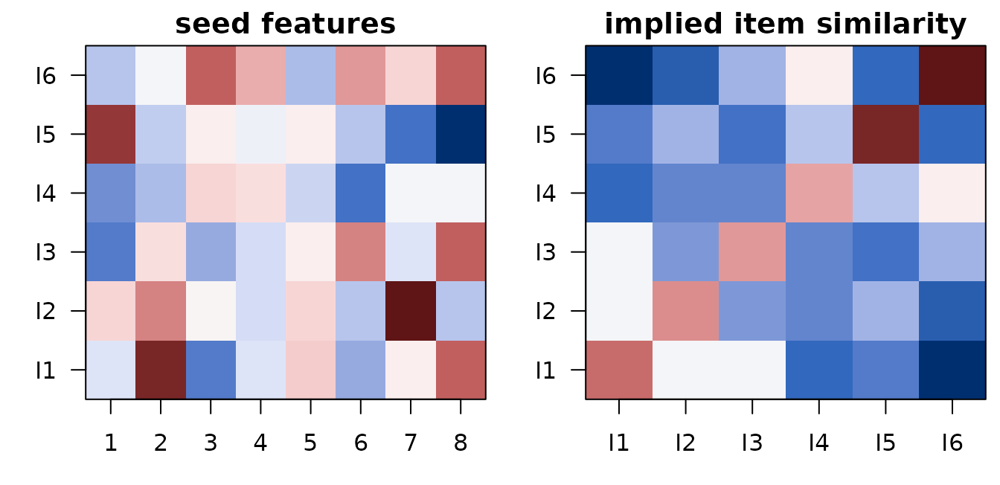

Representational Mapping (ReNA-Map): repmap_model
Source:vignettes/repmap_model.Rmd
repmap_model.RmdReNA-Map is one of four cross-domain representational models in rMVPA. For the section’s terminology and how to choose between ReNA-RC, ReNA-Map, ReNA-RM, and REMAP-RRR, see the glossary at the top of
vignette("Naive_Cross_Decoding").
Overview
ReNA-Map estimates a low-rank linear map from seed feature vectors (one vector per item) to voxel patterns within an ROI/searchlight. It summarizes mapping rank, singular values, and in-sample variance explained (R²) per voxel.
- Inputs: item key, seed feature matrix (rows = items), fMRI trials grouped by item
- Output (per ROI): map_rank, map_sv1/mean, map_r2_mean/median, map_frob_norm
- Implementation: reduced-rank regression (rrpack); falls back to zero map if rrpack is not installed, with a warning.
Scientific motivation
Many neuroscience questions ask: how is information from one domain (e.g., semantic features, visual properties, computational model states) encoded in neural activity?
Traditional encoding models use full-rank regression, which can overfit when features outnumber observations. ReNA-Map uses reduced-rank regression to:
-
Discover the intrinsic dimensionality of the
feature→brain mapping (via
map_rank) - Prevent overfitting by constraining the mapping to a low-dimensional subspace
- Identify dominant encoding axes (via singular values)
Example scientific questions: - How many independent dimensions of semantic space are encoded in anterior temporal cortex? - Does V1 use a low-rank mapping from Gabor filter banks (suggesting sparse coding)? - Which layers of a CNN best predict IT cortex, and how many principal components are needed?
Comparison to alternatives: - vs. Full regression: ReNA-Map regularizes via rank constraint rather than ridge/lasso penalties - vs. RSA: ReNA-Map models item-level patterns directly; RSA only models pairwise distances - vs. PLS/CCA: ReNA-Map explicitly estimates the coefficient matrix C for prediction; PLS focuses on latent variable correlation
When to use
- You have model-derived features (e.g., CNN features, semantic embeddings, computational model states) for each stimulus item
- You want to quantify how many dimensions of your feature space are encoded in a brain region
- You need interpretable mapping coefficients (not just correlation strength)
Data requirements
- A design with a per-trial item key used to average trials into item-level prototypes.
- A seed feature matrix whose rownames match item IDs in the design.
What does a seed feature space look like?
ReNA-Map needs a per-item feature matrix (rows = items, columns = features). Below is a toy 6-item, 8-feature seed and the implied item-by-item similarity it predicts:
set.seed(11)
K <- 6; P <- 8
items <- paste0("I", seq_len(K))
seedF <- matrix(rnorm(K * P), K, P)
rownames(seedF) <- items
seed_sim <- tcrossprod(base::scale(seedF))
Left: seed feature matrix (rows = items, columns = features). Right: implied item-by-item similarity (centered features dot product). ReNA-Map asks each ROI how many of these feature dimensions it can recover.
Quick start: single ROI
The minimal path uses a small synthetic dataset and a single ROI built from a handful of voxels.
library(rMVPA)
## Synthetic dataset
ds <- gen_sample_dataset(D = c(6,6,6), nobs = 60, response_type = "categorical",
data_mode = "image", blocks = 3, nlevels = 6)
## Add an item identity column to group trials into item prototypes
K <- 6
items <- paste0("I", 1:K)
ds$design$train_design$ImageID <- factor(rep(items, length.out = nrow(ds$design$train_design)), levels = items)
## Seed features (K x P) labeled by item
P <- 8
seedF <- matrix(rnorm(K * P), K, P)
rownames(seedF) <- items
## Build design helper and model spec
rpdes <- repmap_design(items = items, seed_features = seedF)
rpmod <- repmap_model(dataset = ds$dataset, design = ds$design,
repmap_des = rpdes, key_var = ~ ImageID,
rank = "auto", max_rank = 5)
## Define a small ROI (50 voxels)
vox <- which(ds$dataset$mask > 0)[1:50]
roi <- list(train_roi = neuroim2::series_roi(ds$dataset$train_data, vox), test_roi = NULL)
## Per-ROI processing
out <- process_roi(rpmod, roi, rnum = 1)
out$performance[[1]]Regional analysis (run_regional)
The same model can be applied across labeled regions. The example below builds a simple two-ROI mask for demonstration. This step can take longer; we keep it disabled by default.
## Create a toy two-ROI mask by splitting the active mask indices
## (This is just to illustrate the API; use real ROI atlases in practice.)
region_vec <- as.vector(ds$dataset$mask)
inds <- which(region_vec > 0)
half <- length(inds) %/% 2
region_vec[inds[1:half]] <- 1L
region_vec[inds[(half+1):length(inds)]] <- 2L
region_vec[region_vec <= 0] <- 0L
region_mask <- neuroim2::NeuroVol(array(region_vec, dim = dim(ds$dataset$mask)), neuroim2::space(ds$dataset$mask))
## Run per-ROI mapping (disabled by default to keep vignette fast)
# res <- run_regional(rpmod, region_mask)
# head(res$performance_table)Interpreting outputs
- map_rank: estimated rank (auto via CV or fixed).
- map_sv1 / map_sv_mean: largest and mean singular values (mapping strength diagnostics).
- map_r2_mean / map_r2_median: average/median in-sample variance explained across voxels.
- map_frob_norm: Frobenius norm of the mapping matrix.
Notes and pitfalls
- Centering: X and Y are column-centered before fitting; this is standard for RRR.
- Negative R² can occur when the mapping underperforms the mean model; treat as a diagnostic rather than an error.
- Item alignment: items are intersected and sorted across design, ROI and seed features; mismatched labels reduce K.
- Small K: results are flagged as potentially unstable when K < 5.
- rrpack missing: the method returns a zero map (rank=0) and logs a warning.
See also
-
vignette("repmed_model")– Representational Mediation (ReNA-RM) -
vignette("repnet_model")– Representational Connectivity (ReNA-RC) -
vignette("Naive_Cross_Decoding")– Naive cross-decoding baseline